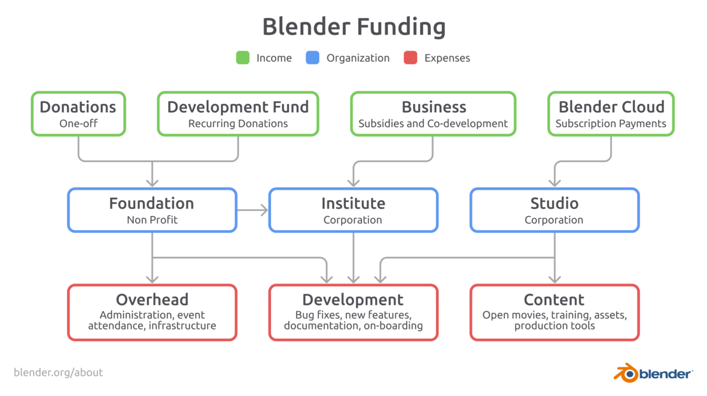

The Organization
The Blender Foundation (2002) is an independent public benefit organization. Its spin-off corporation Blender Institute (2007) hosts the foundation’s offices and currently employs 24 people who work on the Blender software and creative projects to validate and test Blender in production environments. In 2020 the Institute split in two companies; Blender Institute now solely functions as working company for the Blender Foundation, and the new Blender Studio will contribute to the Blender mission producing content and testing production pipelines. These organizations support the community of contributors on blender.org. That is where Blender is being made.
